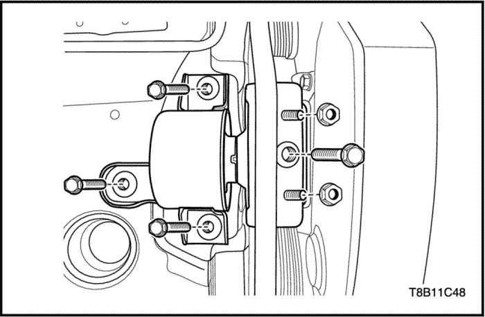

Volante motor - sólo caja de cambios manual
Herramientas necesarias
Fijación del motor EN-48356
Dispositivo de bloqueo del volante motor KM-652
Procedimiento de desmontaje
- Instale la fijación del motor (EN-48356).
- Desmonte la caja de cambios manual. Consulte la Sección 5B, Caja de cambios manual.
- Instale el dispositivo de bloqueo del volante motor (KM-652) para bloquear el cigüeñal.
- Coloque el tornillo de fijación de la caja de cambios con KM-652.
- Quite los tornillos del volante motor.
- Desmonte el volante motor.
procedimiento de montaje
- Desmonte el volante motor.
- Quite los tornillos del volante motor.
Apretar
Apriete los tornillos del volante motor hasta 35+30°+15° N•m (25,8+30°+15° lb-pie).
- Desmonte el dispositivo de bloqueo del volante motor (KM-652) para bloquear el cigüeñal.
Placa de acoplamiento flexible (sólo caja de cambios automática)
Herramientas necesarias
Fijación del motor EN-48356
Dispositivo de bloqueo del volante motor KM-652
Procedimiento de desmontaje
- Instale la fijación del motor (EN-48356).
- Desmonte la caja de cambios automática. Consulte la Sección 5A, "Caja de cambios automática".
- Instale el dispositivo de bloqueo del volante motor (KM-652) para bloquear el cigüeñal.
- Coloque el tornillo de fijación de la caja de cambios con KM-652.
- Quite los tornillos de la placa flexible.
- Desmonte la placa flexible.
procedimiento de montaje
- Desmonte la placa flexible.
- Quite los tornillos de la placa flexible.
Apretar
Apriete los tornillos de la placa flexible hasta 35+30°+15° N•m (25,8+30°+15° lb-pie).
- Desmonte el dispositivo de bloqueo del volante motor (KM-652) para bloquear el cigüeñal.

Arandela de aceite delantera del cigüeñal
Herramientas necesarias
Manguitos del conjunto KM-6351
Procedimiento de desmontaje
- Desmonte la correa de distribución. Consulte el apartado "Sistema de distribución" de esta sección.
- Desmonte el piñón del cigüeñal.
- Extraiga la arandela de aceite delantera del cigüeñal.
procedimiento de montaje
- Acople el manguito (a) interior del instalador.
- Acople la arandela de aceite delantera del cigüeñal al manguito (a) interior.
- Acople el manguito (b) exterior del instalador.
- Instale el tornillo (d) y la arandela (c) del cigüeñal.
- Monte el piñón del cigüeñal.
- Monte la correa de distribución. Consulte el apartado "Sistema de distribución" de esta sección.
Arandela de aceite trasera del cigüeñal
Herramientas necesarias
Instalador del retén de aceite trasero del cigüeñal (-) EN-49204
Procedimiento de desmontaje
- Quite el volante motor o de la placa de acoplamiento flexible. Consulte el apartado "Volante motor (SÓLO CAJA DE CAMBIOS MANUAL)" o "Placa flexible (CAJA DE CAMBIOS AUTOMÁTICA)" de esta sección.
- Desmonte el sensor de posición del cigüeñal (CKP). Consulte la Sección 1F2, Controles del motor - 1.4 DOHC - G14D.

- Desmonte el retén de aceite trasero del cigüeñal con la carcasa.
procedimiento de montaje
- Instale el nuevo retén de aceite trasero del cigüeñal.
- Coloque el instalador EN-49204 y apriete los tornillos para presionar a fondo la arandela.
- Desmonte el instalador EN-49204.

Bancada de motor
Herramientas necesarias
Fijación del motor EN-48356
Procedimiento de desmontaje
- Desmonte el conjunto de filtro del aire. Consulte “"Conjunto del filtro de aire" de esta sección.
- Instale la fijación del motor (EN-48356).

- Quite los tornillos y las tuercas de la fijación del motor.
procedimiento de montaje
- Coloque los tornillos y las tuercas de la fijación del motor.
Apretar
Apriete los tornillos y las tuercas de la fijación del motor hasta 55 N•m (40,5 lb-pie).
- Desmonte la fijación del motor (EN-48356).
- Monte el conjunto del filtro de aire. Consulte “"Conjunto del filtro de aire" de esta sección.
Barra de reacción
Procedimiento de desmontaje y montaje
- Quite el tornillo y la tuerca que unen la varilla de reacción y el soporte.
Apretar
Apriete el tornillo y la tuerca que unen la varilla de reacción y el soporte hasta 80 N•m (59 lb-pie).
- Quite los tornillos que unen la varilla de reacción al travesaño.
Apretar
Apriete los tornillos que unen la varilla de reacción y el travesaño hasta 55 N•m (40,5 lb-pie).
Fijación del soporte del
Herramientas necesarias
Soporte del palet de instalación/desmontaje del conjunto del motor EN-48244
Palet de instalación/desmontaje del conjunto del motor EN-49156
Procedimiento de desmontaje
Precaución: No realice este procedimiento con el motor caliente. Puede provocar daños y accidentes.
- Libere la presión del combustible. Consulte la Sección 1F2, Controles del motor - 1.4 DOHC - G14D.
- Desconecte la tubería de alimentación de combustible de la rampa de inyectores.
- Desconecte la manguera EVAP de la válvula de solenoide del cartucho EVAP.
- Vacíe el refrigerante del motor. Consulte la Sección 1D, Sistema de refrigeración del motor.
- Desmonte el conjunto de filtro del aire. Consulte “"Conjunto del filtro de aire" de esta sección.
- Desmonte la bandeja y la batería. Consulte la sección 1E, Sistema eléctrico del motor.
- Retire los tornillos de fijación de la caja de fusibles.

- Descargue el sistema de refrigerante del A/A, si dispone del mismo. Consulte la Sección 7B, Sistema HVAC.
- Retire el tornillo de fijación del tubo de entrada/salida del aire acondicionado del compresor de A/A.
- Vacíe el aceite de la dirección asistida, en caso de tenerla. Consulte la Sección 6A, Bomba de la dirección asistida.
- Retire la tuerca de unión de la tubería de presión de la bomba de la dirección asistida. Consulte la Sección 6A, Bomba de la dirección asistida.
- Retire el tornillo de la abrazadera de fijación del tubo de presión de la dirección asistida del colector de admisión. Consulte la Sección 6A, Bomba de la dirección asistida.
- Desconecte el manguito de la bomba de la dirección asistida. Consulte la Sección 6A, Bomba de la dirección asistida.
- Desenchufe los conectores de los sensores y actuadores relacionados y retire el cableado del motor.
- Conector de cableado del interruptor de aceite
- Conector del compresor del A/A

- Conector del sensor de temperatura del aire de admisión
- Conector del sensor de presión de A/A (ACP)
- Conector de la válvula de solenoide de posición de levas
- Conector del controlador del acelerador eléctrico (ETC)
- Conector del sensor de presión de aire del colector (MAP)
- Conector de la válvula de solenoide del EVAP
- Conectores de inyectores

- Conector de la bobina de encendido
- Conectores (derecha/izquierda) del sensor de posición del árbol de levas (CPS)
- conector del sensor de temperatura de refrigerante
- Conector del sensor de oxígeno
- Tornillo de fijación de masa
- Conector del calefactor del termostato
- Conector del sensor de posición del cigüeñal (CKP)
- conector del sensor de detonación
- Conector del alternador
- Tuerca de apriete del alternador B+
- Conector del interruptor de nivel de aceite (si cuenta con él)
- Tuerca de apriete B+ del solenoide del motor de arranque
- Tuerca de fijación de masa
- Tuerca de apriete de masa del solenoide del motor de arranque
- Desconecte el manguito de refrigerante (1) de la bomba de agua.
- Desconecte el manguito de refrigerante (2) de la caja del termostato.
- Desconecte los manguitos de entrada/salida de refrigerante del núcleo del calefactor (3) del distribuidor de refrigerante.
- Desconecte el manguito que une el ECT y el depósito de refrigerante (4).
- Desconecte, del colector de admisión, el manguito (5) del servofreno.
- Retire y desconecte los cables y el cableado relacionado con la caja de cambios automática. Consulte la Sección 5A, Caja de cambios automática AISIN (SÓLO CAJA DE CAMBIOS AUTOMÁTICA).
- Desconecte los manguitos de entrada/salida del refrigerante del líquido de la caja de cambios automática. Consulte la Sección 5A, Caja de cambios automática AISIN (SÓLO CAJA DE CAMBIOS AUTOMÁTICA).
- Retire y desconecte los cables y el cableado relacionado con la caja de cambios manual. Consulte la Sección 5B1, Caja de cambios manual de cinco velocidades (D16)(SÓLO CAJA DE CAMBIOS MANUAL).
- Desmonte la barra de reacción. Consulte el apartado "Barra de reacción" de esta sección.
- Desmonte el tubo de escape delantero. Consulte la Sección 1G, Sistema de escape del motor.
- Desmonte los palieres. Consulte la Sección 3A, Árbol de transmisión.
- Instale el palet EN-49156 en el soporte EN-48244.
- Eleve el vehículo utilizando un elevador.
- Coloque el palet y el soporte debajo del motor y la caja de cambios del motor.
- Baje el vehículo hasta que la fijación del conjunto del motor descanse sobre el palet EN-49156.
- Desmonte la fijación del motor. Consulte el apartado "Fijación del motor" de esta sección.
- Desmonte la fijación de la caja de cambios. Consulte la Sección 5A, Caja de cambios automática AISIN (SÓLO CAJA DE CAMBIOS AUTOMÁTICA). Consulte la Sección 5B, Caja de cambios manual de cinco velocidades (D16)(SÓLO CAJA DE CAMBIOS MANUAL).
- Separe el motor y la caja de cambios. Consulte la Sección 5A, Caja de cambios automática AISIN (SÓLO CAJA DE CAMBIOS AUTOMÁTICA). Consulte la Sección 5B, Caja de cambios manual de cinco velocidades (D16)(SÓLO CAJA DE CAMBIOS MANUAL).
procedimiento de montaje
- Monte el motor y la caja de cambios. Consulte la Sección 5A, Caja de cambios automática AISIN (SÓLO CAJA DE CAMBIOS AUTOMÁTICA). Consulte la Sección 5B, Caja de cambios manual de cinco velocidades (D16)(SÓLO CAJA DE CAMBIOS MANUAL).
- Coloque el conjunto del motor sobre el palet EN-49156, sobre el soporte EN-48244.
- Eleve el vehículo utilizando un elevador.
- Coloque el conjunto del motor con el palet y el soporte.
- Baje el vehículo.
- Monte la fijación del motor. Consulte el apartado "Fijación del motor" de esta sección.
- Monte la fijación de la caja de cambios. Consulte la Sección 5A, Caja de cambios automática AISIN (SÓLO CAJA DE CAMBIOS AUTOMÁTICA). Consulte la Sección 5B, Caja de cambios manual de cinco velocidades (D16)(SÓLO CAJA DE CAMBIOS MANUAL).
- Instale los palieres. Consulte la Sección 3A, Árbol de transmisión.
- Monte el tubo de escape delantero. Consulte la Sección 1G, Sistema de escape del motor.
- Monte la barra de reacción. Consulte el apartado "Barra de reacción" de esta sección.
- Instale y conecte los cables y el cableado relacionado con la caja de cambios automática. Consulte la Sección 5A, Caja de cambios automática AISIN (SÓLO CAJA DE CAMBIOS AUTOMÁTICA).
- Conecte los manguitos de entrada/salida del refrigerante del líquido de la caja de cambios automática. Consulte la Sección 5A, Caja de cambios automática AISIN (SÓLO CAJA DE CAMBIOS AUTOMÁTICA).
- Instale y conecte los cables y el cableado relacionado con la caja de cambios manual. Consulte la Sección 5B1, Caja de cambios manual de cinco velocidades (D16)(SÓLO CAJA DE CAMBIOS MANUAL).
- Conecte el manguito de refrigerante (1) en la bomba de agua.
- Conecte el manguito de refrigerante (2) a la caja del termostato.
- Conecte los manguitos de entrada/salida de refrigerante del núcleo del calefactor (3) en el distribuidor de refrigerante.
- Conecte el manguito que une el ECT y el depósito de refrigerante (4).
- Conecte el manguito de servofreno (5) al colector de admisión.
- Enchufe los conectores de los sensores y actuadores relacionados.
- Conector del sensor de posición del cigüeñal (CKP)
- conector del sensor de detonación
- Conector del alternador
- Tuerca de apriete del alternador B+
- Conector del interruptor de nivel de aceite (si cuenta con él)
- Tuerca de apriete B+ del solenoide del motor de arranque
- Tuerca de fijación de masa
- Tuerca de apriete de masa del solenoide del motor de arranque
Apretar
- Apriete la tuerca de fijación B+ del alternador hasta 15 N•m (11 lb-pie).
- Apriete la tuerca de fijación B+ del solenoide del motor de arranque hasta 10,5 N•m (7,7 lb-pie).
- Apriete la tuerca de fijación de masa 12 N•m (8,8 lb-pie).
- Apriete la tuerca de masa del solenoide del motor de arranque hasta 38 N•m (28 lb-pie).
- Conector de la bobina de encendido
- Conectores (derecha/izquierda) del sensor de posición del árbol de levas (CPS)
- conector del sensor de temperatura de refrigerante
- Conector del sensor de oxígeno
- Tornillo de fijación de masa
Apretar
Apriete el tornillo de fijación de la masa hasta 12 N•m (8,8 lb-pie).
- Conector del calefactor del termostato
- Conector de cableado del interruptor de aceite
- Conector del compresor del A/A
- Coloque la tuerca de unión de la tubería de presión de la bomba de la dirección asistida. Consulte la Sección 6A, Bomba de la dirección asistida.
- Coloque el tornillo de la abrazadera de fijación del tubo de presión de la dirección asistida en el colector de admisión. Consulte la Sección 6A, Bomba de la dirección asistida.
- Conecte el manguito de la bomba de la dirección asistida. Consulte la Sección 6A, Bomba de la dirección asistida.
- Coloque el tornillo de fijación del tubo de entrada/salida del aire acondicionado del compresor de A/A, si cuenta con él.
- Cargue el sistema de gas del A/A. Consulte la Sección 7B, Sistema HVAC.
- Coloque los tornillos de fijación de la caja de fusibles.
- Coloque la batería y la bandeja. Consulte la sección 1E, Sistema eléctrico del motor.
- Monte el conjunto del filtro de aire. Consulte “"Conjunto del filtro de aire" de esta sección.
- Conecte la tubería de alimentación de combustible a la rampa de inyectores.
- Conecte la manguera EVAP a la válvula de solenoide del cartucho EVAP.
 |
|
 |
|
| © Copyright Chevrolet Europe. Reservados todos los derechos |